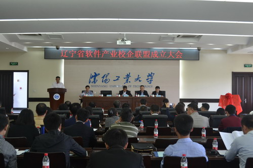
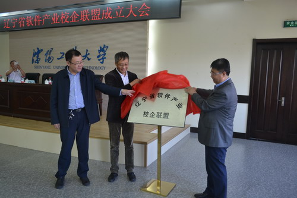
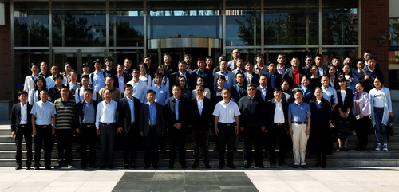

辽宁省软件产业校企联盟在沈阳工业大学成立
2017-06-01 09:41 审核人：



5月25日下午，辽宁省软件产业校企联盟成立大会在沈阳工业大学胜利召开。辽宁省教育厅有关领导出席大会。来自省内50多家高校、企业的负责同志、相关人员参加大会。大会由副校长李三喜主持。
党委副书记李英民首先致欢迎词。他代表沈阳工业大学对辽宁省软件产业校企联盟的成立表示热烈祝贺，并表示软件产业校企联盟必将带动高等学校办学体制机制的改革，满足辽宁经济社会发展对人才和科技的需求，为老工业基地的全面振兴做出更大的贡献。
辽宁省教育厅副巡视员章雪冬代表省教育厅讲话。他表示，在全省深刻学习领会习近平总书记“三个推进”重要讲话的丰富内涵和精神实质的同时，各个学校务必充分认识教育供给侧结构性改革的迫切性。希望联盟的成立能够达到以人为本、联合创新的目的，促进成员单位自身的发展，提升软件产业整体竞争力。
辽宁省教育厅工业高教处副处长李勇江宣读了省教育厅关于同意成立辽宁省软件产业校企联盟的批复。辽宁工程技术大学副校长邵良彬宣读了辽宁省软件产业校企联盟理事会名单及组织机构。
辽宁省软件产业校企联盟理事长、副校长袁晓光在致辞中回顾了辽宁省软件产业校企联盟成立过程并提出联盟2017年工作计划。他表示联盟一定不辜负省教育厅、工信委的重托，必将成为软件人才培养、科技发展、成果转化的校企桥梁。
袁晓光、章雪冬及东软控股副总裁李印杲共同为辽宁省软件产业校企联盟揭牌。
袁晓光代表联盟分别与高校代表、辽宁建筑职业学院副院长田百洲，企业代表、大连华信集团副总裁佟永江进行了签约。
辽宁科技大学副校长张志强代表联盟院校、中软国际教育科技集团高级副总裁李佳历代表联盟企业分别作了表态发言。
会上一致表决通过了《辽宁省软件产业校企联盟理事会名单及组织机构》、《辽宁省软件产业校企联盟章程》及《辽宁省软件产业校企联盟专家委员会章程》、《辽宁省软件产业校企联盟2017年工作计划》。